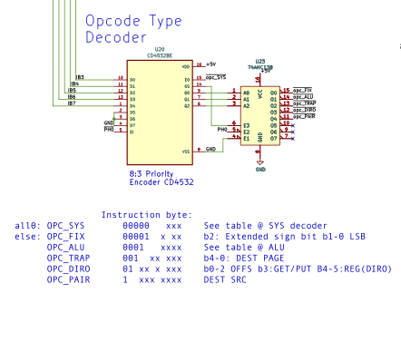

Encoding of Instructions
Each instruction maps to a unique byte value which is called the operation code ('opcode') of the instruction. Operation codes conform to certain bit patterns that generate electric signals that drive the coordinates operations of the CPU during each instruction cycle.
This CPU uses six distinct ways of encoding these bit-patterns called format groups. All instructions and the opcodes they map to are documented under Groups.
Hardware Implementation
Format Groups
The five high-order bits (IB3-7) of the instruction word register feed into the encoder chip. The encoder generates 6 mutually exclusive enable signals for downstream decoders as listed in the table.
